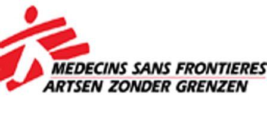

Over ons
Over ons
Artsen zonder grenzen is opgericht in 1971 na de onafhankelijkheidsoorlog in Biafra, in Nigeria. Geschokt door de gebeurtenis namen artsen en journalisten de touwtjes in eigen handen. Vandaag de dag is AZG, of Artsen zonder grenzen, een internationale organisatie die alles op alles zetten om slachtoffers van oorlogen, rampen en epidemieën te kunnen verzorgen.
Startpagina

In Haïti is er een nieuw ziekenhuis geopend waar nu 170 werknemers staan. AZG had eerder al een ziekenhuis staan op deze locatie, maar haar diensten daalden stelselmatig. Nu de politiek er is verergerd, staat de medische zorg in Haïti weer onder druk. Met deze reden werd er een nieuw ziekenhuis geopend. De crisis zorgt voor veel problemen voor de medische voorziening van het volk, straten worden afgezet etc. en dit maakt het moeilijk voor ziekenwagens om hun werk te doen.

De oorlog in Syrië zorgt voor veel vluchtelingen, en ook deze hebben medische zorg nodig. AZG biedt nu steun bij één van de opvanglocaties aan de grens in Syrië. Samen met andere autoriteiten bekijken ze verschillende opvang locaties en bepalen de hulp die ze daar moeten bieden voor de vluchtelingen.
Het project “Zohra” is een project dat mensen de kans biedt om in de schoenen van de artsen van AZG te staan. Je gaat als arts een patiënt verzorgen, en terwijl het project kom je stukjes van haar leven te weten. Zo kom je niet enkel meer te weten over de artsen, maar ook over de patiënten die AZG behandeld. Deze installatie valt te verhuren vanaf 11 januari 2020.
Artsen zonder grenzen organiseert ook acties om geld in te zamelen, zo verkopen zekerst- en nieuwjaarskaarten. Ze doen dit al sinds 2000 en hebben tot nu toe al een miljoen euro hiermee opgebracht. Bedrijven hebben de kans om deze kaarten grootschalig aan te kopen en ze dan zelf door te verkopen..
In 2010 was er een aardbeving in Haïti, deze zorgde voor een groot tekort aan gezondheidszorg. Vele medische centra werden vernietigd. Hier bood AZG zijn hulp. Ze steunden Haïti in het bouwen van nieuwe ziekenhuizen en het bemannen van de al bestaande ziekenhuizen om zo toch de nodige zorg te bieden aan de inwoners.
In 2016 raakte de orkaan Matthew Haïti en liet heel wat schade achter. AZG stelden in verschillende steden mobiele klinieken op om de gezondheidstoestand van de bevolking te evalueren. Ook was er een tekort aan drinkbaar water, en dat brengt ook ziektes voort. AZG zette zich dan ook in om nieuwe waterreservoirs aan te leggen en deze ziektes te bestrijden.

Philippe Alliet: Eon Was looking for a partner that could not only inspire us, but that also gave us the opportunity to participate with our knowledge instead of simply offering financial support. Doctors without borders really gave us this chance.

Wim Jansen: At the time of the earthquake in Haiti we all felt powerless. We wanted to contribute, even if it was just a little bit, so we started looking for a method to do so. This is how we first found about Doctor without borders, and we chose to support them.

Frederic De Bruyne: It has always been important for us to have some kind of impact on society, together with carrying out our assignments with clients. Combining these has always been our goal. If you take a look at doctors without borders, they give their “clients” very good medical support whilst having a very big impact on society. This is the kind of combination we were looking for and that’s why we support them.
1. Download het formulier en lees het grondig door.
2. Vul het formulier volledig in, laat geen vragen onbeantwoord.
3. Zet het formulier om in een pdf bestand en verstuur het naar schenkers@azg.be
Nadat u het formulier heeft ingevuld en opgestuurd, zal ons personeel deze nalezen en nagaan of wij u eventueel kunnen tewerkstelling.
 Doelen
Doelen
*Doel 42: het doel is om een aantal van 300 donaties van 42 euro in te zamelen om 300 kinderen in 1 maand therapeutisch te kunnen behandelen.
*Doel 78: het doel is om een aantal van 500 donaties van 78 euro in te zamelen om 45.348 kinderen in 3 dagen een malariabehandeling te geven.
*Doel 14: het doel is om een 558 maandelijkse donaties van 14 euro in te zamelen om 1116 mensen te behandelen tegen hiv gedurende 1 jaar.
Als je ons wilt steunen met een van onze doelen, schrijf het bedrag dan over naar IBAN: BE73 0000 0000 6060 of
BIC BPOTBEB1 met Doel "Getal van het doel" in de beschrijving.
Alle bedragen zijn welkom, dus ook als je gewoon wilt doneren schrijf dan je gewenste bedrag over naar IBAN: BE73 0000 0000 6060 of BIC BPOTBEB1.

BANKGEGEVENS:
IBAN: BE73 0000 0000 6060 /
BIC BPOTBEB1
Adres:
Gewijde-Boomstraat 46 1050 Elsene.
Telefoon:
02/474 74 74
Twitter
Facebook
Instagram